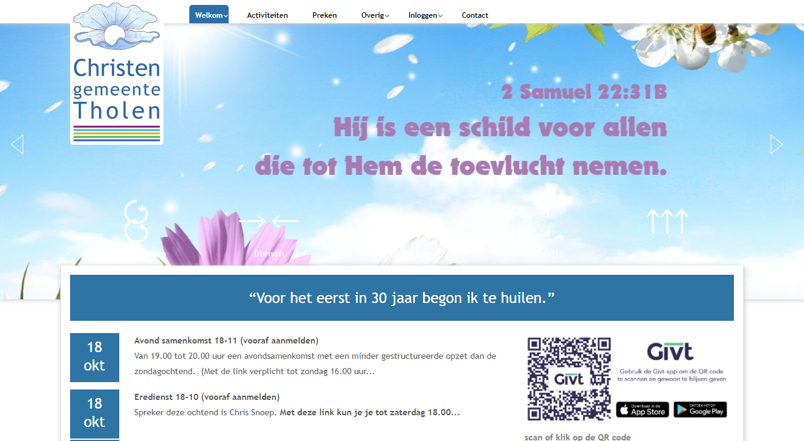
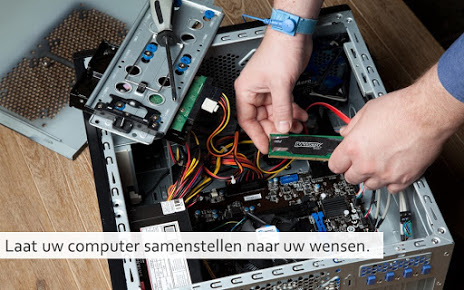
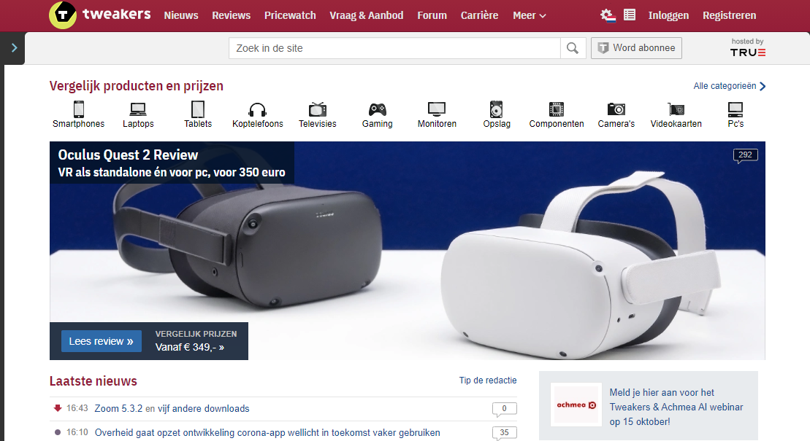
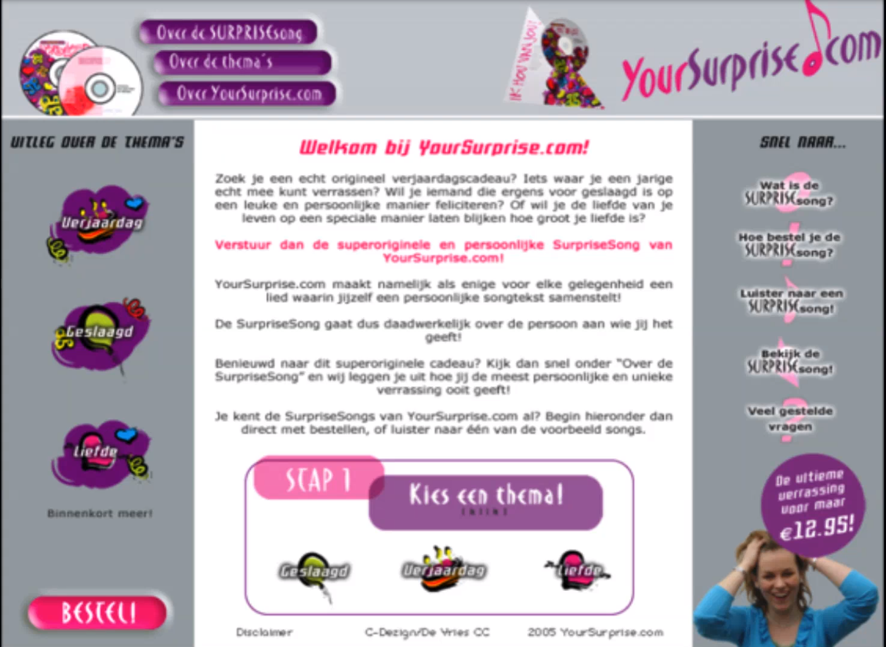
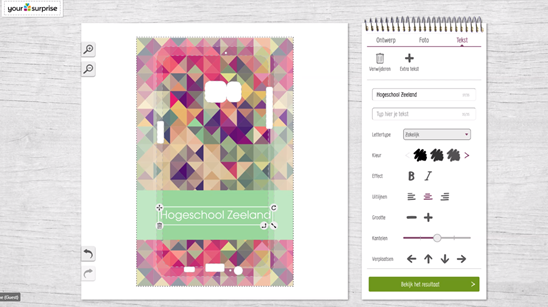
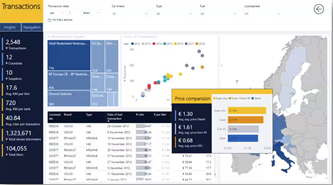

Unilogic
Begonnen eerst als klein computerwinkel in Sittard. Zei zijn nu voor het implementeren van een hybride/cloudoplossingen voor grote overheidsinstellingen/bedrijven. Zei komen met een oplossing als een soort “template” en bespreken samen met de klant naar de beste implementatie daarvan. (onderdeel van Vincere groep)
Rollen binnen de ICT:
Data & Analytics Consultant
Probeert de data bij bedrijven in kaart te brengen.
It engineer
Adviseert en implementeerd ICT infrastructuren.
Managed services engineer
Zorgt dat de services die het bedrijf bij een ander geimplementeerd heeft goed blijft draaien.
Service engineer (2e-lijn)
Levert ondertsteuning op het gebied van hardware.
Technieken:
Microsoft 365
Voor hybrid en public cloud draaien zei hierop.
PfSense
Een van de geïnstalleerde routersoftware bij hun klanten.
Enkele merken waarvan zij toestellen leveren:
Cisco
Gigaset
Lenovo

Cannect
Richten zich meer op de implementatie bij particulieren/kleinere bedrijven en het maken van websites, bij websites werken ze met versies en vragen naar eventuele verbeteringen.
Door hun gemaakte website:

Rollen binnen de ICT:
(familiebedrijf, dus weinig personen)
It consultant
Helpt bedrijven met ICT in het algemeen. (geen specifieke tak als bijv. Analytics of Office 365)
Netwerk-/media beheerder
Pakt de computer netwerkgerelateerde dingen aan.
Technieken:
Wordpress
Maken websites voor wordt andere hierop gebouwd.
Unifi
Beheersysteem van de wifi gebruiken ze dit.
ADSL/VDSL
Leveren deze manieren van verbinden via solcon/voiceworks.

Tweakers
Tweakers is een Nederland en Belgische site die techneuten helpt met wat er nieuw in de sector is en geven van de beste optie als product. Zij verdienen geld door advertenties en bijvoorbeeld plaatsen van vacatures binnen de sector. (onderdeel van Dpgmediagroup)
Huidige website:
Rollen binnen de ICT:
Systeembeheerder
Installeerd en onderhoud de computersystemen.
Developer
Makt de software binnen het bedrijf.
Senior Developer
Een eervaren software bouwer.
Technical Architect
Houdt zich bezig met het ontwikkelen en actueel houden van de Technische Architectuur van de ICT-infrastructuur waaronder netwerken.
Data Analist
Berwerkt een hoop gegevens tot nuttige informatie.
Technieken:
True
Tweakers word door True gehost.
Kubernetes
Draait op een container via Kubernetes.
Google analytics/adsense
Regelen analytics en adsense via deze services.

Your suprise
Maakt persoonlijke giften en stelt ze beschikbaar op hun website. De website hebben ze zelf gemaakt en maken ook zelf de tools om de giften te personaliseren. Intern werken ze met de agile manier van werken.
Eerste publieke website van Yoursuprise:
Voorbeeld zelfgemaakt designsysteem:
Rollen binnen de ICT:
(ze hebben niet echt een strikte rol wat je doet binnen het bedrijf, je mag zelf weten wat je doet)
PHP developer
Developer die gefocussed is op het maken van software gebaseerd op PHP.
Javascript developer
Developer die gefocussed is op het maken van software gebaseerd op Javascript.
Technieken:
Terraform
Word gebruikt om aan google door te geven hoeveel resources ze nodig hebben voor hun omgeving.
Slack
Voor communicatie binnen het bedrijf.
AI / Machine learning
Voor het uitvinden hoeveel medewerkers nodig zijn om alles in elkaar te zetten.
Agile
Manier van werken die zij gebruiken.
Enkele Programmeertalen:
PHP
Javascript
Typescript

Veracode
Veracode test publiek gestelde apps voor beveiligingsfouten door data te proberen te injecteren via verschillende technieken, en maken ook software om de code van de app zelf te testen op deze lekken. Ze zijn gebaseerd in de verenigde staten en werken grotendeels online, dus kunnen makkelijk samenwerken met andere in andere landen.
Testsoftware van Veracode:

Rollen binnen de ICT:
ICT Security Consultant
Helpt bedrijven met het beter beveiligen van hun netwerken.
Linux Systems Administrator
Installeerd en beheerd linux systemen binne het bedrijf.
Principal Software Engineer (DevOps)
ondersteund het product live cycle
Software Engineer (Data Engineering)
creerd en beheerd software die vallen onder data engineering en analytics
Automation Engineer
automatiseerd en onderhoud de systemen die gebruikt worden om te testen
Technieken:
Github
Voor versiebeheer.
.NET
Een van de progammeertalen.
net als alle andere bedrijven, voor contact te zoeken met andere bedrijven.

Macaw
Ze zoeken naar de beste oplossing voor jou IT gerelateerde probleem, zei vinden ook dat ze echt gefaald hebben als ze geen oplossing hebben die niet gebruikt word door de eindelijke gebruiker. (requirements engineering) En proberen zo open mogelijk te zijn richting de uiteindelijke klant en werken met korte develop cycles.
Manier van werken:

Voorbeeld eindproduct:
Rollen binnen de ICT:
Data & Analytics Consultant
Probeert de data bij bedrijven in kaart te brengen.
Business Consultant DevOps
helpt bedrijven met het inrichten van hun ontwikkel- en beheerprocessen en het implementeren hiervan.
Cloud Engineer
helpt bedrijven bij het maken van de juiste keuze voor cloud- en security vraagstukken en het implementeren hiervan.
SharePoint Office 365 Consultant
Hij helpt bedrijven met het kiezen van de juiste oplossingen op het gebied van Sharepoint en het implementeren hiervan.
.NET Developer
Developer die gefocussed is op het maken van software gebaseerd op .NET.
Technieken:
Power BI
(Business Intelligence) Visualisatietool voor gegevens.
Microsoft 365
(vroeger office 365) Het grote pakket van Microsoft waar bedrijftools zoals Word (als software en online) en Sharepoint onder vallen. (valt powerBI ook onder)
Sitecore
Content management systeem dat hun implementeren voor het managen van de inhoud van bijvoorbeeld webpagina’s en apps.
Bronnenlijst
- about. Unilogic. https://www.unilogic.nl/unilogic/
- about. Cannect. https://cannect.nl/contact
- about. Tweakers. https://tweakers.net/info/over-tweakers/
- about. Yoursuprise. https://www.yoursurprise.nl/contact
- about. VeraCode. https://www.veracode.com/about
- about. Macaw. https://www.macaw.nl/over-ons/